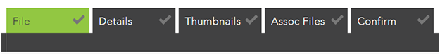
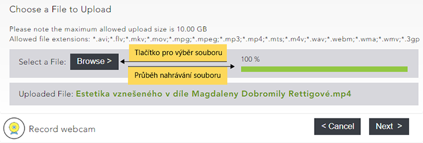
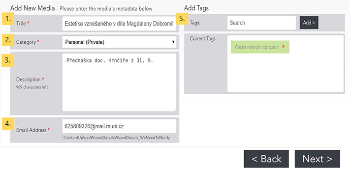
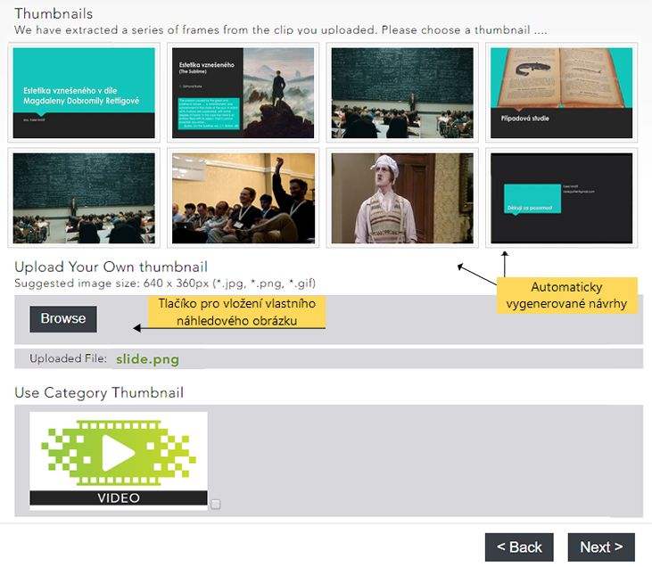
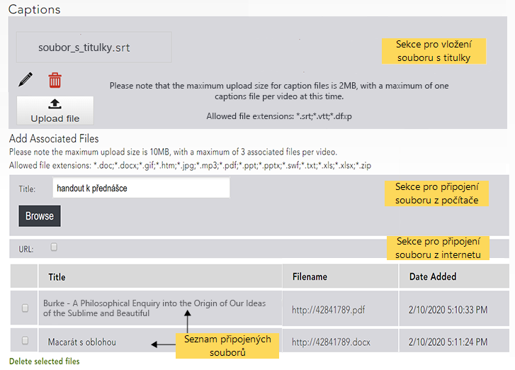

Nahrání souboru z počítače¶
Do základního rozhraní pro vložení nahrávky se dostanete z úvodní obrazovky knihovny pomocí volby “Upload” v navigační liště. Při vkládání nahrávky je třeba projít pěti kroky, při nichž budete moci nahrávku doplnit informacemi různého druhu. Mezi jednotlivými kroky lze přecházet pomocí záložek v horní části nahrávacího rozhraní a všechny informace lze po vložení nahrávky dodatečně editovat.

Výběr souboru z počítače¶

Na hlavní stránce knihovny videí klikněte na tlačítko “Upload” v navigační liště, čímž se dostanete do rozhraní pro přidávání obsahu. Po stisknutí tlačítka “Browse” se Vám otevře standardní souborový manažer, ve kterém najdete a vyberete soubor, který chcete vložit.
Poznámka. Maximální velikost souboru, který chcete do Medialu nahrát, je 10 GB. Podporovány jsou formáty AVI, FLV, MKV, MOV, MPG, MPEG, MP3, MP4, M4V, MTS, WAV, WEBM, WMA, WMV a 3GP.
Doplňující informace (Details)¶

Nyní je třeba vyplnit formulář s doplňujícími informacemi. Formulář obsahuje jednotlivá pole pro:
- Název nahrávky
- Kategorie – výběr kategorie určuje, pro koho bude nahrávka viditelná a přístupná
- Popisek – stručná charakteristika nahrávky o délce max. 1000 znaků; doporučujeme do popisku uvádět, kdy a při jaké příležitosti byla nahrávka pořízena (např. kód a název předmětu, jméno konference apod.), v ideálním případě pak využít naši předpřipravenou šablonu.
- E-mailová adresa – na zadanou adresu Vám budou chodit zprávy o zpracování nahrávky
- Tagy – tagy, podle kterých mohou nahrávku dohledat ostatní uživatelé (jednotlivé tagy je nejprve nutné vepsat do textového pole a poté přidat do seznamu tlačítkem “Add”)
Povinná pole jsou označena hvězdičkou, pečlivé vyplnění celého dotazníku je nicméně nutné, pokud chcete, aby byla Vaše nahrávka snadno rozpoznatelná a dohledatelná. Podrobnější informace o tom, jak fungují kategorie a tagy, včetně našeho doporučení, jak je používat, naleznete v návodu věnovaném organizaci obsahu knihovny.
Náhledový obrázek (Thumbnails)¶

V tomto kroku si můžete nastavit obrázek, který bude fungovat jako náhled Vašeho videa. Na výběr máte několik návrhů vygenerovaných přímo z videa, ovšem použít můžete i implicitní obrázek dané kategorie (je-li pro kategorii nastavený) nebo obrázek vlastní. Pro vložení vlastního náhledového obrázku stiskněte tlačítko “Browse” a vyberte požadovaný obrázek ze svého počítače.
Poznámka: Obrázek musí být ve formátu PNG, JPG nebo GIF. Doporučovaná velikost pro správné zobrazení náhledu je 640 na 385 pixelů.
Titulky a přidružené soubory (Assoc Files)¶

Obr 5: Vkládání titulků a přidružených souborů
Ke své nahrávce můžete připojit soubory dvojího druhu: jednak titulky, které se budou zobrazovat v oknu přehrávače, a jednak doplňující soubory v podobě obrázků, dokumentů či archivů se soubory.
Pokud chcete vložit titulky, klikněte na tlačítko “Browse” a vyberte soubor s titulky ze svého počítače. Titulky musí být ve formátu SRT, VTT nebo DFXP. Pro správné zobrazení znaků české abecedy je třeba soubor s titulky uložit s kódováním UTF-8.
Zobrazování titulků při přehrávání lze přepínat pomocí tlačítka “CC” v pravé spodní části okna přehrávače.
Vložený soubor s titulky můžete smazat kliknutím na obrázek popelnice - “Delete caption file”.
Poznámka: Ke každé nahrávce lze připojit pouze jeden soubor s titulky. Medial také neumožňuje dodatečně titulky editovat či synchronizovat, ujistěte se proto ještě před vložením titulků, že jsou správně časovány.
Při vkládání přidružených souborů je nutné nejprve vyplnit jméno, pod kterým se bude přidružený soubor zobrazovat, do pole Title. Poté klikněte na tlačítko “Browse” a vyberte soubor, který chcete k nahrávce připojit. Zaškrtnete-li volbu URL, budete moci použít soubor umístěný na internetu. Stačí do textového pole zkopírovat internetovou adresu souboru a potvrdit stisknutím tlačítka “Add”.
Takto lze ke každé nahrávce přidružit až tři soubory. Přidružené soubory po vložení videa zobrazíte kliknutím na záložku “Resources” umístěnou pod přehrávačem.
Pro odstranění souborů vyberte soubory, které chcete smazat, pomocí zaškrtávacího políčka v levém sloupci a klikněte na “Delete selected files”.
Poznámka: Přidružit lze soubory ve formátu DOC, DOCX, GIF, HTM, JPG, MP3, PDF, PPT, PPTX, SWF, TXT, XLS, XLSX a ZIP.
Potvrzení (Confirm)¶
Poslední krok je přehledným shrnutím vlastností nahrávky. Pokud chcete nějaké informace doplnit či upravit, můžete se vrátit k předchozím krokům pomocí tlačítka “Back” nebo pomocí záložek v horní části nahrávacího rozhraní. Pokud jste s informacemi o nahrávce spokojeni, potvrďte její vložení kliknutím na tlačítko “Finish”.
Pozor! Po vložení do Medialu nebude Vaše nahrávka ihned přístupná. Každý vložený soubor prochází zpracováním, které trvá různou dobu v závislosti na velikosti souboru a vytížení systému. O dokončení zpracování budete informováni e-mailem.
Časté dotazy (FAQ)¶
Mohou do Medialu nahrávat obsah i studenti? Kdo jej uvidí?
Studenti mohou do Medialu přidávat obsah, ale pouze do své osobní kategorie. Jejich nahrávky se tedy nebudou zobrazovat ostatním uživatelům Medialu, mohou je nicméně dále sdílet mimo knihovnu médií.